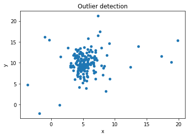
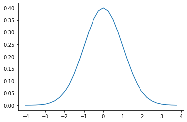

import numpy as np
from matplotlib import pylab as plt
import seaborn as sns
import pandas as pd
data = pd.read_csv('Outlier_example4.csv')
_=sns.jointplot(x='x', y='y', data=data)
Outlier detection is a way of figuring out data points that do not follow an established pattern. Once we observe a pattern in our data that represence normal behavior, then it is easy to flag the points that do not conform to this pattern as being anomalies or generated by different underlying mechanism. This turns out to be very important in number of fields, such as in medicine, drug discovery and security such as fraud detection. In this blog post we will examine how to build a simple outlier detection algorithm.

In the plot above, we can see that most of the data are clustered together and few are scattered far away from the cluster center. From an outlier detection perspective, we can assume that the points in the center, which represents majority of the data, are normal whiles far away points are anomalies, because they differ from normal behavior. This is the bases for outlier detection.
Let’s recall what we learned from the first blog post. We showed that the Gaussian distribution has a bell-shaped curve like the one below.

From this curve, we can see that points that are far from the mean have low probabilties (are less common) while points close to the center have high probabilities(more common). The function that estimates whether a point is in the high or low density region is called Probability Density Function and for the Gaussian random variables it is is given as: \[\large{P(x) = \frac{1}{\sqrt{2\pi}\sigma} exp\displaystyle\{ {-\frac{(x - \mu)^2}{2\sigma^2}}} \}\]
Therefore if we know that our data has Gaussian noise we can simply estimate a probability density function \(P(x)\) of the data. Using an appropriate threshold, say \(\mu\), we can determine anomalies/normal data points by checking if they fall below/above the threshold.
\[f(x) = \left\{\begin{array}{cr} 0 & \text{if } P(x) \leq \mu\\[0.3cm] 1 & \text{if } P(x) > \mu\\ \end{array} \right.\]
We can extend this idea if we have n number of features by assuming independence and writing out the joint probability density function of the features as follows: \[\large{P(x_1, x_2, \cdots , x_n) = \prod_{i = 1}^{n} \frac{1}{\sqrt{2\pi}\sigma_i} exp \displaystyle\{ {-\frac{(x_i - \mu_i)^2}{2\sigma_i^2}}} \}\]
We can apply this algorithm that we just found to the data in the first plot to do outlier detection. Let’s make joint plot to show that the features in this data are indeed Gaussian.
import numpy as np
from matplotlib import pylab as plt
import seaborn as sns
import pandas as pd
data = pd.read_csv('Outlier_example4.csv')
_=sns.jointplot(x='x', y='y', data=data)
On this plot, we can see the marginal density plots for each of our the features, and both of them are Gaussian. We can then proceed to implement our simple outlier detector.
def pdf(x, u, s):
p1 = 1/(np.sqrt(2*np.pi)*s)
p2 = - ((x - u)**2)/(2*s**2)
return p1*np.e**p2
threshold = 0.00035
data['class'] = None
x_mean = data.x.mean()
x_std = data.x.std()
y_mean = data.y.mean()
y_std = data.y.std()
for index, row in data.iterrows():
x = row['x']
y = row['y']
value = pdf(x, x_mean, x_std)*pdf(y, y_mean, y_std)
#print(value)
outcome = ''
if value < threshold:
outcome = 'Outlier'
else:
outcome = 'Normal'
data.at[index, 'class'] = outcome
g=sns.scatterplot(x='x', y='y',data=data, hue='class', size=500)
You can see the outcome of running our simple detection algorithm. Most of the farthest points have been flag (orange) for being anomalies and that is what we expected.
In this blog post, we have learned how to build a simple outlier detection algorithm and applied it to real data. Sklearn implementation is more advance than this our algorithm but the underlying idea remains the same.